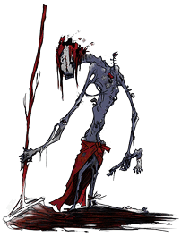

22 |
Creatures |
 |
Following is a list of creatures encountered in the game:
Students Although they remind Jake of some of his classmates, these dark creatures exhibit very little humanity. They linger in the shadows, waiting to pull Jake under if he gets too close. They are too smart however, or perhaps too timid, to climb out of the darkness to attack Jake.
Skitters Everyone’s seen roaches at the school, particularly in the cafeteria, but those bugs were never this huge. Skitters are oversized roaches that scatter when light strikes them. Unlike the students, they have no directional skills and will often run straight into the light, frying on the ground within a few seconds.
A twisted variation of one of the school’s English teachers, this creature demands silence in her classroom and will tear apart anything that attempts to disrupt her lessons. She likes her classroom dark, and the introduction of light sends her into a frenzy.
 Janitor This dark custodian appears to be mopping up any light that’s introduced into the school. He whistles an unsettling tune, and can be found cleaning things up in the school’s cafeteria. It seems almost painful to him whenever another light source is turned on.
These squealing, conniving, snitching, sneaky little hall monitors roam the hallways looking for anyone who’s out of class. The boy patrols while the girl keeps watch for any lazy students. Thankfully, Jake has a certain flair with young ladies.
This massive, howling, testosterone-fueled gym teacher has no tolerance for weaklings in his class. He pulls dodgeballs from his stomach and hurls them at any uninvited guests. It will take more light than Jake’s flashlight offers to knock out this behemoth.
The final faculty member is discreet and vindictive, sitting in his cozy little office, behind his cozy little desk. Any attempts made by Jake will be undone almost as quickly as Jake can perform them. Jake will have to act fast, and use his items as broadly as possible in order to defeat this creature. |
 English Teacher
English Teacher
 Hall Monitors
Hall Monitors
 Coach
Coach
 Principal
Principal
 |
 |
 |